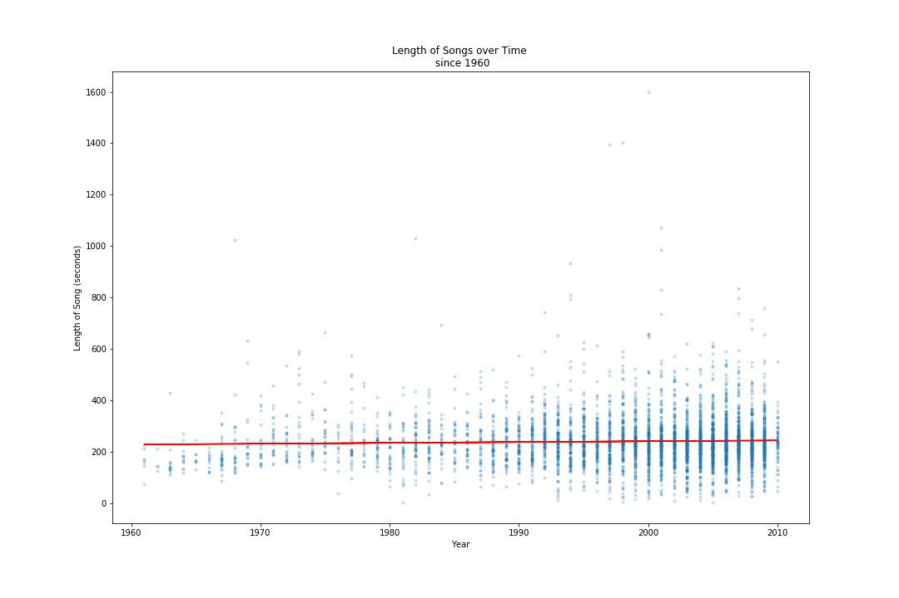

<!DOCTYPE html>
<html lang="en-us"></html>
    <head>
        <meta charset="utf-8">
        <title>
            Music to our ears: Song Length
        </title>
        <link rel="stylesheet" href="https://stackpath.bootstrapcdn.com/bootstrap/4.3.1/css/bootstrap.min.css" integrity="sha384-ggOyR0iXCbMQv3Xipma34MD+dH/1fQ784/j6cY/iJTQUOhcWr7x9JvoRxT2MZw1T" crossorigin="anonymous">
        <link rel="stylesheet" href="formatting.css">
      </head>
    <nav class="navbar navbar-expand-lg navbar-dark bg-dark">
        <a class="navbar-brand" href="#">Homework 11</a>
        <button class="navbar-toggler" type="button" data-toggle="collapse" data-target="#navbarColor02" aria-controls="navbarColor02" aria-expanded="false" aria-label="Toggle navigation">
          <span class="navbar-toggler-icon"></span>
        </button>
      
        <div class="collapse navbar-collapse" id="navbarColor02">
          <ul class="navbar-nav mr-auto">
            <li class="nav-item active">
              <a class="nav-link" href="landing.html">Home <span class="sr-only">(current)</span></a>
            </li>

            <li class="nav-item">
              <a class="nav-link" href="#">Plots</a>
            </li>

            <li class="nav-item">
              <a class="nav-link" href="#">Comparison</a>
            </li>
            <li class="nav-item">
              <a class="nav-link" href="#">Data</a>
            </li>
          </ul>
        </div>
    </nav>
    <body>
        <div class="col-md-8">
          <h1> Song Length over Time</h1>
          <p >
              Witgit h technology advaancing allowing high resolution sound and increasing storage, have song lengths increased over time? 
              Or have attentions spans shortened musically as it seems to have with many other medias in the modern age? 
              When comparing the length of songs over time starting around 1960, we can see a very slight increase in song length. 
              Interestingly the range and variety of length increasess.
          </p>
          <br><br>
          <div>
              
          </div>
        </div>
        <script src="https://code.jquery.com/jquery-3.3.1.slim.min.js" integrity="sha384-q8i/X+965DzO0rT7abK41JStQIAqVgRVzpbzo5smXKp4YfRvH+8abtTE1Pi6jizo" crossorigin="anonymous"></script>
        <script src="https://cdnjs.cloudflare.com/ajax/libs/popper.js/1.14.7/umd/popper.min.js" integrity="sha384-UO2eT0CpHqdSJQ6hJty5KVphtPhzWj9WO1clHTMGa3JDZwrnQq4sF86dIHNDz0W1" crossorigin="anonymous"></script>
        <script src="https://stackpath.bootstrapcdn.com/bootstrap/4.3.1/js/bootstrap.min.js" integrity="sha384-JjSmVgyd0p3pXB1rRibZUAYoIIy6OrQ6VrjIEaFf/nJGzIxFDsf4x0xIM+B07jRM" crossorigin="anonymous"></script>    
    </body>
</html>